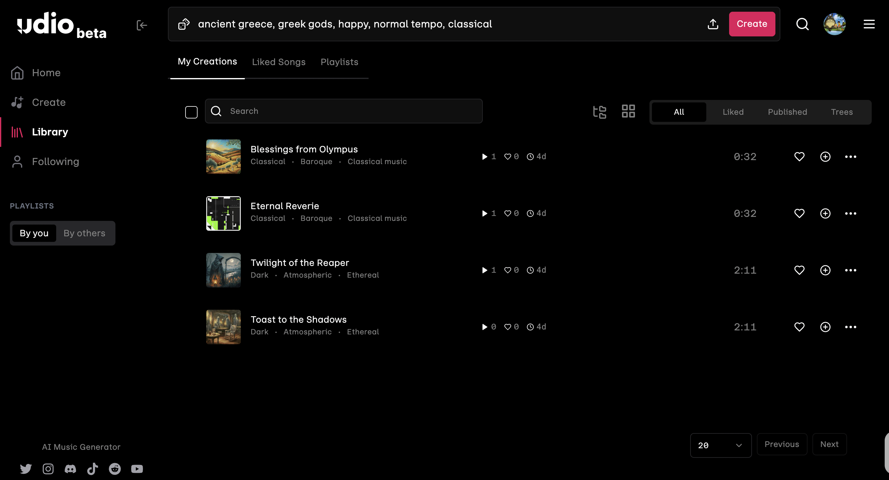
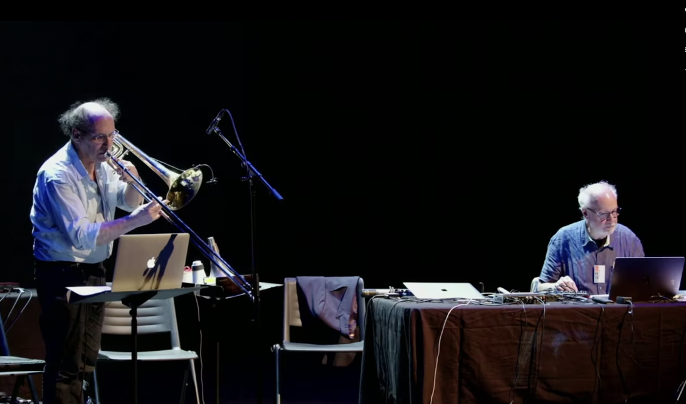

Summer 2024
Considering Disabilities in Online Cultural Experiences
Artistic areas such as music, visual art, theatre and dance have been exploring online experiences for performers and audiences during the COVID-19 pandemic, through formats such as virtual museum visits or networked musical performances, often experienced through ad-hoc repurposing of video conferencing or video game software. While these online experiences have played a vital role in providing remote access to cultural artifacts when in-person activities are restricted, there is a need to further expand these experiences beyond commonly-used software environments and the standard formats of a phone, tablet or computer screen and stereo sound, especially for the visually and/or hearing impaired. This project considers ways in which online cultural experiences may be rendered more inclusive for Disabled people, especially those who may not be able to engage with visual and/or auditory media without mediation through other perceptual means. The core team of researchers based at the Center for Computer Research in Music and Acoustics (CCRMA), led by Patricia Alessandrini as PI, are working with cross-departmental and international partners - including ShareMusic & Performing Arts and the Institute For Research & Co-ordination in Acoustics & Music (IRCAM) – to identify and address Disabled people's needs and desires for accessible online experiences, considering what enhancements might be most effective in meeting those needs through exchanges, workshops, lectures and symposia. In the process of making online experiences more accessible, we hope to propose formats and paradigms that offer immersive, interactive, engaging and meaningful cultural experiences for all.
Project Members
Project Member
Designation
ORCID
Application of AI Tools in Music Generation
During the Summer of 2024, I had the privilege of working with Professor Alessandrini on the “Considering Disabilities in Online Cultural Experiences” project. Drawing from my background in Design and a strong interest in accessibility, I focused on researching the application of AI tools in music generation.
Traditional methods of composing music present barriers for Disabled individuals, such as issues with instrument design and mobility. AI has the potential to overcome these challenges and revolutionize the music industry. For instance, a user with partial vocal ability can use tools like Somax2 to compose a song complete with chords and instrumentals. My research reveals the potential of AI-generated music to be commercially popular. A recent example is a popular song by American Producer Metro Boomin, “BBL Drizzy”, which was revealed to have sampled from an audio track created by Udio, a text-to-music AI tool. The voice leading the song was completely AI-generated, as well as a part of the song. As of August of 2024, the track currently has a little bit more than 7 million streams on SoundCloud.

The research was divided into two categories: online and offline tools. Online tools, such as Somax2 and Prism Lab, facilitate live, interactive co-creation between humans and machines. I analyzed their training datasets, exploring the diversity and performance of their musical outputs. For offline tools, which generate music from text inputs, I assessed six AI music-generation tools, evaluating the ethics of their training datasets, generation time, and overall performance. This ethical consideration in training datasets is particularly important as AI companies like Suno and Udio are facing multimillion-dollar lawsuits from music labels over copyright infringement (Wired).

Visually Expressing Emotions Online
My second project of the summer involved the Muse-IT online co-creation platform, which aims to recreate the in-person co-creating process. Currently, one thing that is lacking on the platform is the communication of emotions between musicians. To address this gap, I worked on developing a way to express emotions online through the use of “avatars.” This initiative is intended to be a co-creation process with the participants, and we are currently designing a workshop in Sweden for November to gather participants’ feedback. For example, I proposed a rapid prototyping workshop where the participants will use materials provided like clay, post-it notes, pen and paper, to design how they want their emotions to be visually expressed. This workshop will be crucial in refining the platform, ensuring that it truly meets the needs and desires of the participants, particularly in conveying the emotional nuances that are often lost in digital collaboration.
In a previous workshop, participants sketched out their ideas on paper, which I then digitized using Figma. These designs included various examples of humanoid avatars where facial expressions and limb movements could change to express emotions, as well as non-humanoid representations like lines with different colors and dynamics to convey the energy of the participants. Emotions in this context were organized by arousal—how excited or relaxed someone is—and valence—how happy or sad someone is.
Fig 3. Figma Mock-Up of “Avatars” First Drawn Out by Participants